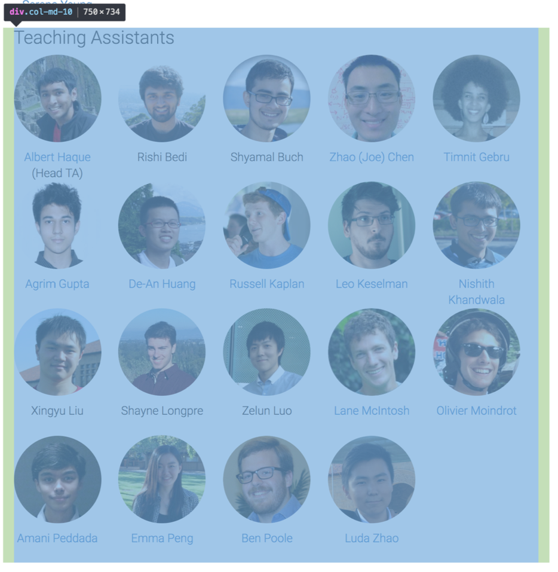

2. What is the CSS “box model” for the section “Instructors Teaching Assistants” like? You need
to show me everything from the outer container down to the innermost one. You must also
include the size details for content, padding, border, and margin for each box.
Each box has a dimension of 120px * 120px and has a border 0px but has a 10px margin at the bottom of each images. The font size of each name is 16px. All of these boxes has an event listener. Its box sizing is a border box so border is created
automatically for all the boxes. But for the whole section of "Instructors Teaching Assistants" there is a margin on both the left and right side of 15px each. The Instructors and the Teaching Assistants both have a padding on the left and
right of 15px.

3. Locally, if you want to insert a random photo just below that of “Serena Yeung”, how would
you do it? Describe the steps and capture the screenshot showing that you actually did it.
In the div of the Instructors sections, after the closing of the first Serena Yeung div, add a br to leave a line and add your image by using img src="Image Adress"
4. At the top of the page, there is an animation that is going on in div with id=“teaser”. Which
class of div is changing all the time? Can you identify the JavaScript code responsible for
this? Describe how do you discover this JavaScript code and copy part of the relevant code
to show me.
The div id "convnetvis" is changing all the time. You can identify by looking at the div, everytime the information is changed, the word div is always highlighted in pink.
5. The pictures in the teaser div seems to be manipulated by the JavaScript code. Can you
identify the source of these pictures? Explain how you obtain the answer.
They get all picture from https://www.cs.toronto.edu/~kriz/cifar.html or CIFAR-10. I look up in the source page -> cs231n.stanford.edu -> convnet_demo -> convnet_demo.js in the commend line they told that they dowload image from CIFAR-10.
6. The bar graph color on the rightmost of the teaser is currently green. Can you change it to
blue locally? Describe the hacking steps and capture the screen shot showing that you
actually did it.
In the html file I find the element of that bar graph and it show that it use div class pp to represent it so I look in the source page -> cs231n.stanford.edu -> style.css and I find the pp class in that class it has a background-color for
bar graph so I change it to rgb(0,0,255) to make it blue.